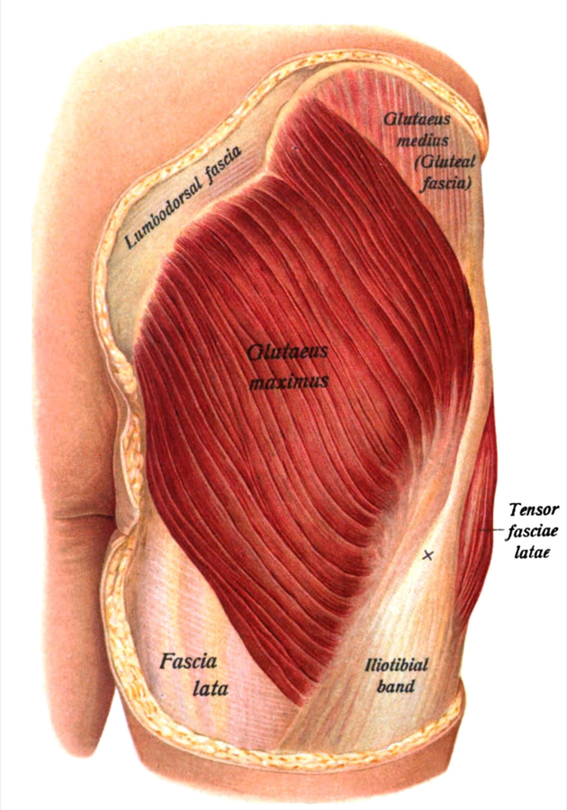

大殿筋Gluteus maximus
お尻の丸みをつくる、体の中でも特に大きな筋。股関節を後ろに伸ばす・外にひねる主力で、立ち上がる・階段を上る・跳ぶ動作で大きく働きます。

起始停止
図：Sobotta, Atlas and Text-book of Human Anatomy (1909) Fig.294（パブリックドメイン, Wikimedia Commons "Sobo 1909 294.png"）
起始・停止・神経支配
| 起始 | 腸骨の後部（後殿筋線より後ろ）、仙骨・尾骨の後面、仙結節靱帯、胸腰筋膜 |
|---|---|
| 停止 | 大部分は腸脛靱帯へ。下部の深い線維は大腿骨の殿筋粗面へ |
| 神経支配 | 下殿神経（L5〜S2） |
働き
| 股関節の伸展 | 主な働き。深くしゃがむ・坂や階段を上るなど、股関節が大きく曲がった状態から伸ばす動きで特に強く働きます。 |
|---|---|
| 股関節の外旋 | 強力な外旋筋 |
| 上部線維／下部線維 | 上部は外転、下部は内転を助ける（線維で働きが違う） |
静かに立っているときや、平地をゆっくり歩くときの活動は比較的小さい筋です。「立っているだけで常に強く働く筋」ではありません。
運動との関係
| 主な種目 | スクワット、ヒップスラスト、ブリッジ、ステップアップ、ランジ |
|---|---|
| 筋力の確認 | うつ伏せで膝を曲げ、太ももを床から持ち上げる（徒手筋力検査）。腰を反らせる代償に注意。 |
よくある誤解：「お尻が使えていない」は一般向けの言い方で、確立した評価法や病名ではありません。また、殿筋の弱さと腰痛の関連を示す研究はありますが、原因とは確定していません。
トレーナー／理学療法士で必要な深さ
トレーナー
起始・停止・働き、種目による違い、体表での位置
起始・停止・働き、種目による違い、体表での位置
理学療法士
上記＋神経支配、線維ごとの働き、殿部痛の鑑別（腰椎・仙腸関節・股関節）
上記＋神経支配、線維ごとの働き、殿部痛の鑑別（腰椎・仙腸関節・股関節）
関連ページ
参考文献
- Standring S (ed). Gray's Anatomy. 42nd ed. Elsevier; 2020.
- Neumann DA. Kinesiology of the Musculoskeletal System. 3rd ed. Elsevier; 2017.
- Selkowitz DM, et al. J Orthop Sports Phys Ther. 2013;43(2):54–64.